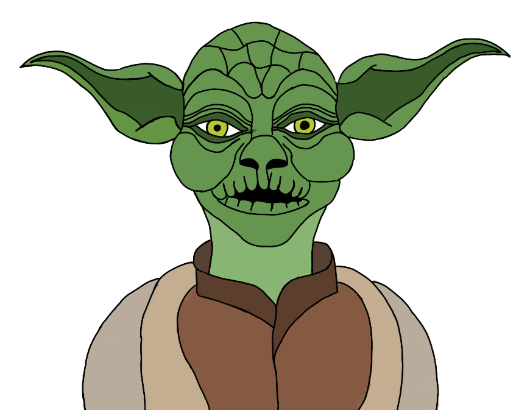

Meet the jedi you must



Build a lightsaber
Customize


The short history of the lightsaber
De lightsaber is het iconische en traditionele wapen van de Jedi en de Sith, vaak omschreven als een elegant wapen voor een meer beschaafde tijd. Volgens de lore evolueerden deze wapens vanuit vroege ontwerpen zoals de "Protosaber". Deze oude versies verbruikten zoveel energie dat het handvat met een kabel was verbonden aan een zware accu die op de rug of riem werd gedragen. Door de eeuwen heen verbeterde de technologie, waardoor de energiebron compact genoeg werd om volledig in het handvat te passen. Vanaf dat moment werd de moderne lightsaber de absolute standaard in het sterrenstelsel.